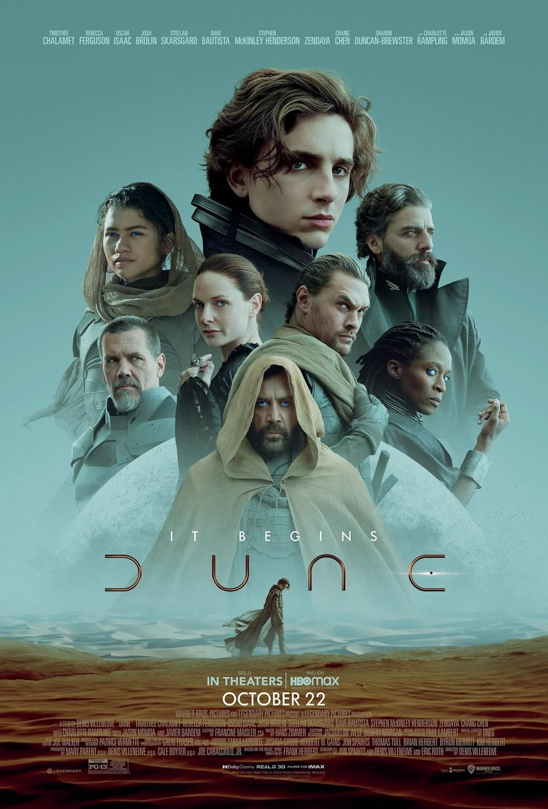

Dune
94th Academy Awards
(Oscars 2022)
10 Nominations, 6 Awards
| Nominations | ||
|---|---|---|
| Category | Nominees | Result |
| Best Picture | Cale Boyter, Denis Villeneuve, and Mary Parent | Nominated |
| Writing (Adapted Screenplay) | Denis Villeneuve, Eric Roth, and Jon Spaihts | Nominated |
| Cinematography | Greig Fraser | Won |
| Film Editing | Joe Walker | Won |
| Production Design | Patrice Vermette and Zsuzsanna Sipos | Won |
| Costume Design | Jacqueline West and Robert Morgan | Nominated |
| Makeup and Hairstyling | Donald Mowat, Eva von Bahr, and Love Larson | Nominated |
| Visual Effects | Brian Connor, Gerd Nefzer, Paul Lambert, and Tristan Myles | Won |
| Sound | Doug Hemphill, Mac Ruth, Mark Mangini, Ron Bartlett, and Theo Green | Won |
| Music (Original Score) | Hans Zimmer | Won |